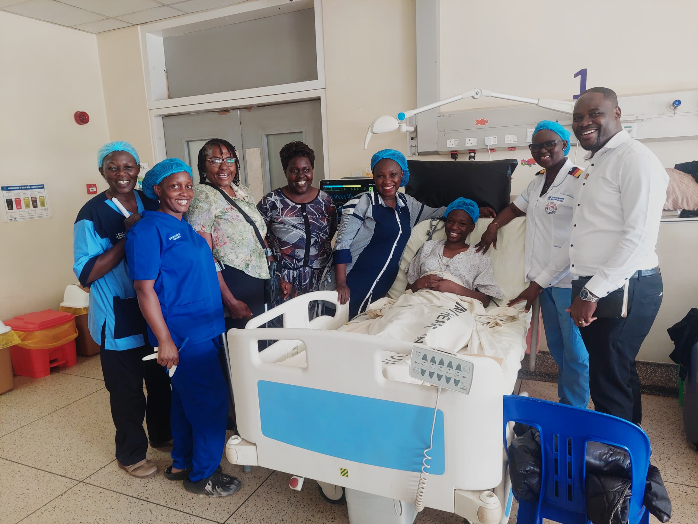
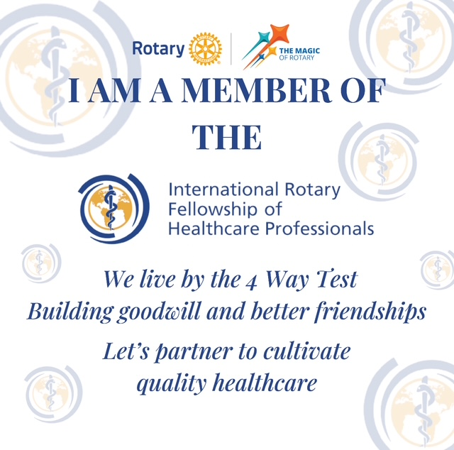
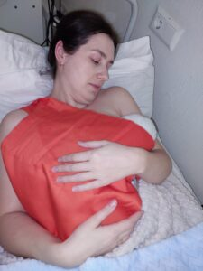
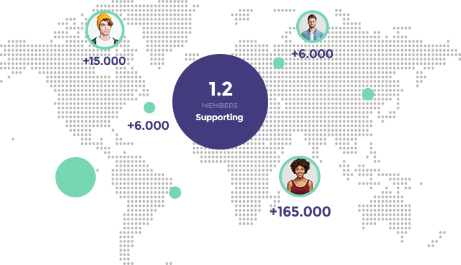
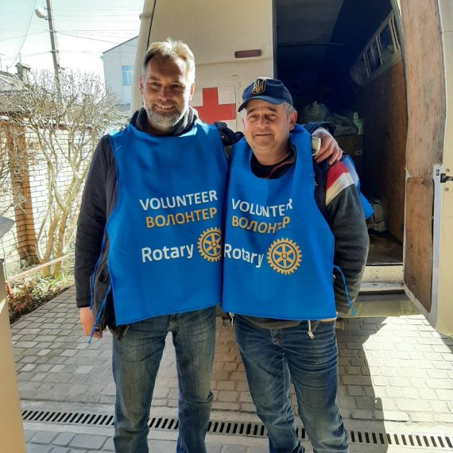
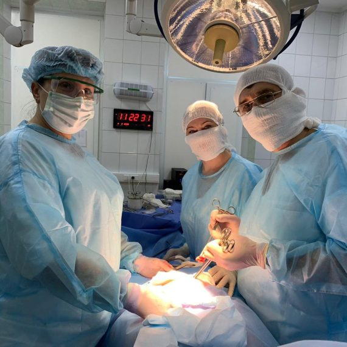
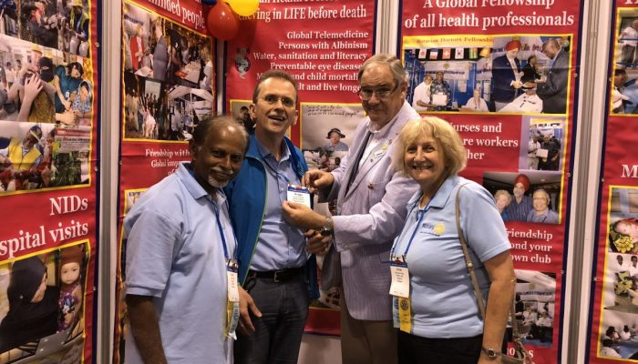

International Rotary Fellowship of Healthcare Professionals
You can make a difference.
A multidisciplinary fellowship of health professionals working together — through humanitarian service projects, education and a global network — towards a better world.

Who we are
Organisation for health care
Our Fellowship draws its unique strength from the fact that we are a multidisciplinary group reflecting the delivery of medical care in real life where health professionals work together to deliver the best patient care.
The Fellowship is open to all Rotarians with interest in health matters. It is also open to non-Rotarian health professionals. So, wherever you are, please join us so that we can together work towards a better world.

Cervical Cancer — a preventable killer
Why are so many people dying of cervical cancer?
Cancer of the Cervix claimed 350,000 lives in 2022 though it is preventable and curable. Rotarians worldwide are actively engaged in eliminating Cervical Cancer.
A recent online seminar gave us an opportunity to share what we have learned so far, celebrate our successes, and consider further action.
The Rotary International Convention in Taipei, Taiwan
Booth (1234) in the House of Friendship — we look forward to welcoming you to our Booth in the House of Friendship. Booth number is 1234, in the Fellowship zone. As before it will be a hub of activities – renewing old friendships, making new ones and most importantly exchanging ideas.
Fellowship meeting – Tuesday 16th June 13:30-14:30 — we've been allocated a meeting room at TaiNEx1, floor 5F – Room 500. Come and hear from our members changing lives through innovative health programmes. (This event will not be listed in the main Convention programmes but in the list of Unofficial Affiliated Events.)


All over the world
An open Directory of Health Programmes
We often hear amazing stories about Rotary's impact on healthcare in different parts of the world. There are hundreds of health programmes initiated by Rotarians, many changing lives. Rotarians invest countless voluntary hours setting up health camps, offering free treatment, transporting medications and donating medical equipment.
At present we also do not have a way of sharing our experiences and learning from each other. Valuable lessons learned are lost in the mist of time. We have decided to compile an open Directory of Health Programmes – for sharing and encouraging one another.
If you are involved in a health programme please share information about your work with other like-minded people. Register your programme and also see a list of programmes in different parts of the world.
Health Outcomes and Patient Safety
Together for Safe Care: improving new-born outcomes
We call on Rotarians to use our vast resources to ensure that patients receive safe and respectful care and do not suffer harm whilst in care.
2.4 million
Globally 2.4 million children died in the first month of life. In 2019 there were 6,700 new-born deaths every day.
One third
Approximately one third are due to Asphyxia and lack of resuscitation. By implementing Helping Babies Breathe, we can reduce avoidable deaths with successful breathing and resuscitation techniques.
Helping Babies Breathe
An evidenced-based hands-on neonatal resuscitation program designed to save new-born lives in resource-limited environment.
See how to help?
Our main focus is to provide the most important things for school - kind teachers and place to study. In last year we already opened 4 schools and accommodated more than 150 students. This year our plan is to increase this numbers to 10 schools and 400 students.



"Dear Colleagues, Rotarian Friends! Thank you so much! Your support is incredibly important for us here in Ukraine. With sincere respect and gratitude to you"Dr Volodymyr Korolenko, Fellowship member

Together, we see a world where people unite and take action to create lasting change — across the globe, in our communities, and in ourselves.
This fellowship operates in accordance with Rotary International policy, but is not an agency of, or controlled by, Rotary International.
Equipment – Rotarian Research Group for the Environment View more
Save the date
Upcoming events
16th June 13:30–14:30 · Taipei, Taiwan
Members' Presentations
Rotary International Convention in Taipei — Tuesday, 16th June 13:30–14:30.
TaiNEx1, floor 5F – Room 500
Friday 31 July 2026
Annual General Meeting
Reports and presentations from our members.
Guest speaker (Details to be confirmed)
Upcoming events
Webinars
Good eyesight – a perfect gift — webinar on preventable blindness and other eye problems (Details to follow)
Eliminating Cervical Cancer — the role of advocacy (Details to follow)
Every help counts
We appreciate every help we can get. Please get in touch with us to find out how you can support our cause.
Keep making changes
Donate to our organisation so that we can keep making changes in international healthcare.
Help directly
Interested in helping the community directly? Join our fellowship today.